Tabla de ilustraciones
Ilustración 1 Arquitectura objetivo de la red programable 2
Ilustración 2 Fases del proyecto OnLife Network 3
Ilustración 3 Simplificación de protocolos de la red de servicios programables 3
Ilustración 4 Diagrama arquitectónico de los servicios residenciales del caso 1 4
Ilustración 5 Arquitectura del sistema de administración y gestión 5
Ilustración 6 Beneficios de la CTpd 5
Ilustración 7 Producto, servicio y recurso en procesos eTOM modificado 11
Ilustración 8 Ejemplo de grafo de un servicio 12
Ilustración 9 Descomposición del terminal óptico de la C.T. 14
Ilustración 10 Arquitectura del circuito de acceso PON 15
Ilustración 11 Circuito de control del enrutador 16
Ilustración 12 Arquitectura de la red IPv6 del hogar 18
Ilustración 13 Adaptar el controlador del tejido a IPv6 19
Ilustración 14 Infraestructura y programas del tejido 19
Ilustración 15 Entorno de gestión de la CTpd (pendiente) 21
Prueba de concepto del Onlife Network
La idea de estas pruebas se fundamenta en una arquitectura de red de servicios programables, con casos de uso de servicios extremo a extremo y no en la utilización de componentes aislados de la red o los sistemas; de esta manera nos aseguramos que cumplimos con las expectativas de las distintas áreas usuarias de nuestros recursos tecnológicos.
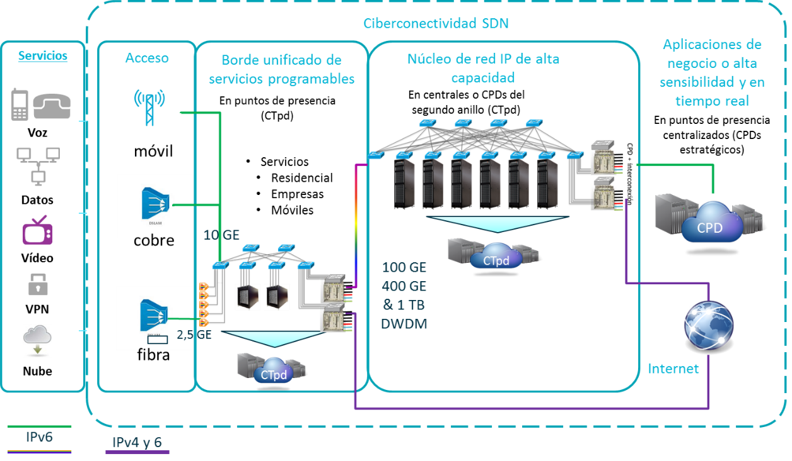
Ilustración Arquitectura objetivo de la red programable
La motivación es realizar una prueba de concepto que nos permita validar las siguientes hipótesis,
-
Casos de uso de servicios extremo a extremo
-
Utilización de componentes físicos marca blanca
-
Utilización de desarrollos en código abierto
-
Integración como un servicio programable más las aplicaciones o servicios de terceros, permitiéndoles estar muy próximos al borde de la red y a nosotros ofrecerles servicios de valor añadido
-
Comprobación de la facilidad de integración de distintos y diversos componentes en varias tecnologías
-
Evaluación de nuestra capacidad interna para diseñar, desarrollar, desplegar y operar las tecnologías de red y sistemas
El proyecto OnLife Network se ha planificado en varias fases coincidentes con la metodología establecida en la Innovation Call 2016 que consta de varias fases. En la primera fase nos dedicaremos a comprobar y validar las hipótesis propuestas en un entorno de laboratorio. En la segunda fase se espera realizar pruebas de campo en los entornos de prueba de Telefónica de España.
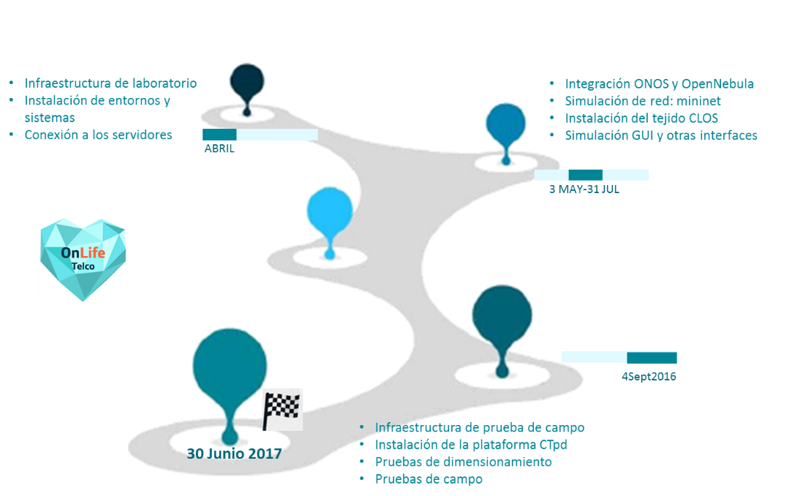
Ilustración Fases del proyecto OnLife Network
Esto requiere de una simplificación extrema de la red que hemos venido construyendo a lo largo de los años, la siguiente figura ilustra el impacto de esta arquitectura en el entorno de una central telefónica.
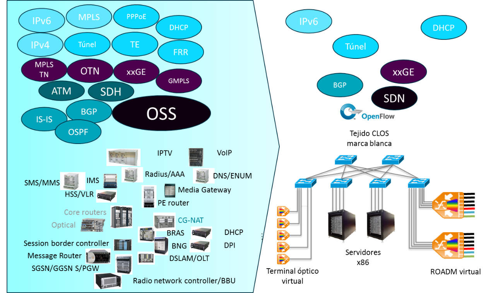
Ilustración Simplificación de protocolos de la red de servicios programables
Acondicionar la C.T. como un centro de servicios programables
Este caso de uso se centra en la provisión de servicios de conectividad residenciales desde una central telefónica utilizando virtualización, ciberconectividad y procesamiento en la nube; teniendo en cuenta que las tres vertientes tecnológicas suman un todo dentro de la central haciéndola un ente autónomo.
El caso es similar a uno patrocinado por AT&T y demostrado exitosamente en el Open Networking Summit 2016, nosotros vamos a modificar ciertos componentes para flexibilizar la solución basados en conceptos similares a los utilizados por Deutsche Telekom en su híper simplificación de la red, con el claro objetivo de hacer despliegue más sencillo y estable.
Utilizando la última versión de ONOS CORD, la solución de código abierto para operadores que está desarrollando el ON.Lab, vamos a facilitar la adecuación a nuestra arquitectura objetivo de los casos de uso y aprovechar en la medida de lo factible el desarrollo que ya está disponible.
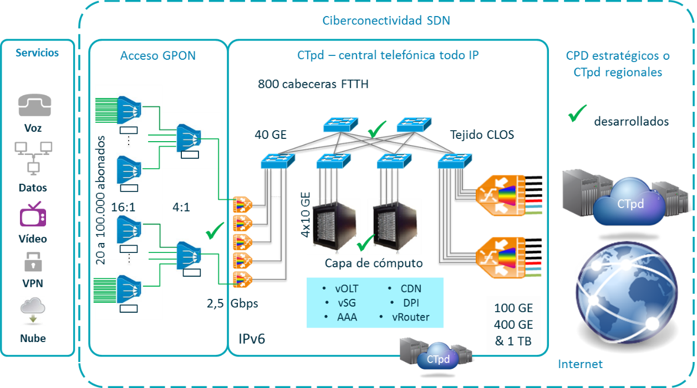
Ilustración Diagrama arquitectónico de los servicios residenciales del caso 1
La nebulización de funciones de red (NFaaS) se realizará con una visión de servicio, contrario a la virtualización de elementos aislados e inconexos que están haciendo algunos fabricantes tradicionales. El caso de uso se enfocará en una red de acceso GPON, pero que sin mayor esfuerzo o coste puede migrar a XGS-PON.
A diferencia de la propuesta de arquitectura del ETSI, cuya integración con elementos legados está encontrando demasiadas dificultades, debido en gran parte a la complejidad de su diseño y el no haber tenido en cuenta desde un inicio el ingrediente fundamental de la ciberconectividad; nosotros vamos a resolver el caso de uso en el plano de los servicios y no de sus componentes, utilizando componentes virtuales menos complejos y mejor adecuados a la funcionalidad que exigen la ciberconectividad y la programabilidad de la nueva red en un entorno de nube come se muestra en la siguiente ilustración.
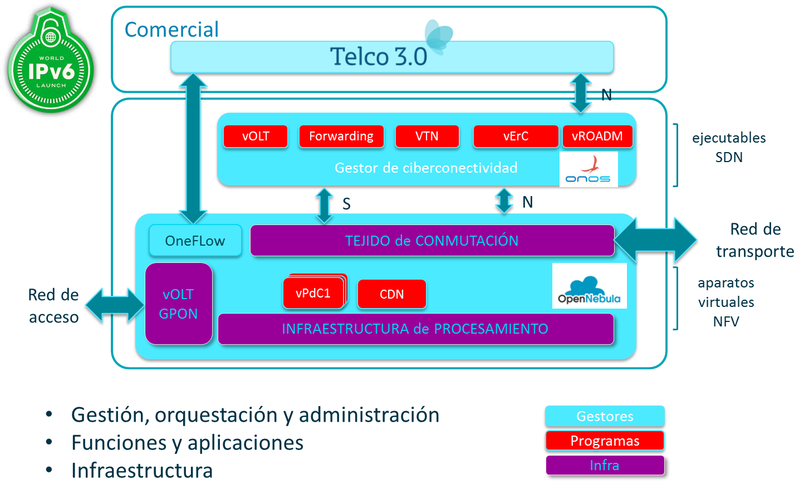
Ilustración Arquitectura del sistema de administración y gestión
Requisitos y beneficios
Para asegurar su validez, la prueba de campo deberá demostrar los siguientes beneficios
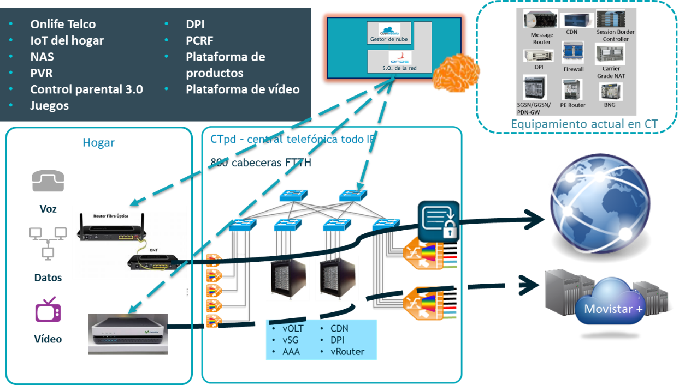
Ilustración Beneficios de la CTpd
Y al igual que CORD hemos tenido en cuenta cumplir con 5 requisitos básicos:
Habilitar servicios innovadores
La CTpd como un centro de servicios programables debe habilitar un amplio abanico de servicios, no limitados a servicios de acceso ni debe constreñir sin necesidad la implementación de nuevos servicios. Específicamente la CTpd debe habilitar servicios extraídos de estos vértices:
-
Ambos servicios, el de acceso y los de nube convencionales
-
Servicios desplegados tanto en el plano de datos (NFV) como servicios implementados en el plano de control
-
Nuestros servicios que son siempre confiables y los no tan confiables de terceros
Extensible y controlable
La CTpd es una plataforma configurable y no es una solución cerrada, proporciona los medios para que el operador pueda especificar el portafolio de servicios deseados y las dependencias entre esos servicios. Esto permite que la CTpd sea configurable para distintos mercados y redes de acceso: residencial, empresarial y móvil. También debe proporcionar los mecanismos para provisionar y parametrizar estos servicios para atenerse a nuestros objetivos de negocio y operacionales.
Eficiencia de la infraestructura Marco Polo
CTpd está concebida para utilizar infraestructura marca blanca, apoyándonos en el conocimiento adquirido en el proyecto Marco Polo lo extendemos a los servidores, conmutadores y terminales ópticos de central; con el consiguiente ahorro de costes y probada robustez de estos aparatos especificados por el Open Compute Project. La CTpd debe correr sobre servidores y conmutadores marca blanca, trabajando directamente con los fabricantes de microcircuitos
Robustez operativa
La CTpd debe tener en cuenta escenarios de fallo parcial e intermedio, por ello ha sido diseñada teniendo en cuenta la posibilidad que el comportamiento en operación del sistema no está siempre sincronizado con el estado deseado del sistema.
Seguridad multipropósito
La seguridad de la CTpd no debe limitarse a distinguir entre gestores y usuarios del sistema, pero debe ser capaz de asegurar el acceso al sistema de varios actores; como pueden ser operadores globales y locales, desarrolladores de servicios, gestores de servicios y abonados al servicio.
Decisiones de diseño y tecnológicas
Como no es práctico probar todas las variantes de nuestras redes de acceso y segmentos de clientes, esta primera prueba se centra en el acceso G-PON residencial, y el XGS-PON tan pronto esté disponible, pero la arquitectura es la misma que utilizaremos para el acceso de cobre, cable, móvil y también para el segmento empresarial y PyMES.
El diseño es para una red innovadora que ofrezca servicios y micro servicios programables, y que ella misma sea programable; no se contempla compatibilidad con funciones de red existentes para los servicios primarios descritos en los casos de uso, por ello se ha realizado un esfuerzo en utilizar elementos programables de código abierto sobre los cuales vamos a construir la solución más adecuada a nuestras necesidades.
Inspirados en algunos principios de las redes del “nuevo-IP” para esta prueba los aplicamos según se describe en esta tabla.
| Principios | Aplicados al diseño de la prueba |
|---|---|
| Reducir la cantidad de tecnologías utilizadas | Utilizar únicamente IPv6 y transmisión óptica. |
| Utilizar una red para todos los servicios – internet, TV, empresas, etc. | Una única red de paquetes convergente |
| Dimensionar la red con capacidad para todo el tráfico IP sin pérdidas de paquetes | Uso más eficiente de los recursos de red, dimensionar la red para el tráfico IP en hora punta |
| Evitar interfaces internas | Minimizar el número de interfaces internas o de interconexión. Distribuir las interconexiones a internet, entregar el tráfico saliente rápidamente |
| Gestionada alrededor de dispositivos y su lógica | Gestión centrada en abstracciones de la red a través de programas o aplicaciones, con aplicaciones de código abierto |
| La política de servicio de los paquetes van por fuera de la carga | Separar el plano de control del de datos utilizando las cabeceras nativas IPv6 para codificar la información necesaria, como el tipo de servicio, clase de tráfico, dirección, etc. |
| Utilizar IPv6 para todas las funciones y servicios internos | En la red no se soportará IPv4 nativo que se convierte en un servicio. El “servicio Ethernet de operadora” basado en IPv6 |
| Rutas determinísticas y la más corta para todo el tráfico en red | Las tramas de red serán gestionadas por ONOS de acuerdo a las plantillas de tráfico establecidas por los planificadores |
| Los CPD están conectados directamente a los CTpd | Los CPD están directamente conectados a las CTPd para evitar construir interfaces internas adicionales para los grandes flujos de tráfico |
Infraestructura CTpd
La solución se apoya en infraestructura marca blanca especificada bajo los auspicios del Open Compute Project, toda la infraestructura está montada en bastidores Open CloudServer, que permite un despliegue sencillo y robusto en una central telefónica.
Dispositivos Marco Polo
La solución propuesta consta de 3 elementos que ya han sido especificados por el OCP y están disponibles comercialmente:
-
Acceso GPON – terminal óptico en una bandeja con 48 puertos de 2,5 Gbps fabricada por Celestica con el OLT MAC de PMC Sierra
-
Conmutadores – con 32 puertos de 40 Gbps fabricados por Accton modelo 6712 con ASIC de Broadcom
-
Servidores – en placas OCS con doble procesador Intel Xeon, 128 GB de memoria y 4 TB de disco, suministrados por AMAX totalmente montados en su bastidor OCS e integrado de fábrica con los otros 2 componentes.
El sistema operativo de los servidores es Linux con Open vSwitch. Los conmutadores se basan en la pila Atrium de ONF, incluyendo Open Network Linux y el agente de OpenFlow Indigo (OF 1.3), y el OpenFlow Data Plane Abstraction (OF-DPA).
Configuración y dimensionamiento
La plataforma debe tener en consideración la siguiente escala:
-
800 cabeceras de fibra dispersas en la geografía nacional donde residirá al menos una plataforma CTpd
-
Las cabeceras de fibra concentran entre 6.000 y 117.000 líneas de fibra óptica con un objetivo de ocupación del 50%
-
Cada línea iluminada requerirá varios aparatos virtuales para componer su servicio, podemos estimar entre 5 y 10 máquinas encadenadas por abonado
En este primer bastidor hemos sobredimensionado la capacidad de procesamiento y conmutación para poder estresar en las pruebas un máximo que aproxime tráfico de una central y que luego pueda ser reutilizado en pruebas reales en una central, e incluye.
-
Acceso GPON para 6.048 líneas, distribuido en 2 bandejas 1U de 48 puertos c/u.
-
Seis conmutadores dispuestos en un tejido CLOS para mover el de oeste a este y permitiéndonos dimensionar horizontalmente la CTpd para ajustarse a las demandas particulares de cada cabecera de fibra. Los 6 conmutadores en esta prueba tienen suficiente para conectar bastantes más servidores y bandejas de acceso que las que estamos conectando en este momento.
-
Ocho servidores con suficiente capacidad para integrar posibles servicios de empresa que queramos integrar de manera independiente y también realizar pruebas con servicios de terceros como Microsoft Office 365, Akamai o Facebook.
Programas – Sistema Onlife C.T.
El sistema de la CTpd se ha formulado en la integración de proyectos en código abierto, pero manteniendo la simplicidad de las soluciones evitando la creación innecesaria de interfaces o capas de gestión que los sistemas seleccionados deberían ya tener solucionados.
Núcleo
Los componentes seleccionados para esta primera implementación y realizada en base a la documentación disponible y la facilidad con que se puede adecuar las soluciones a nuestras necesidades:
-
ONOS – nuevo sistema operativo de la red, diseñado y desarrollado específicamente para operadores de telecomunicaciones. Utilizaremos la versión más reciente de ONOS que se distribuye trimestralmente y es compatible hacia atrás. ONOS se encarga de controlar la conectividad del servicio y el tejido CLOS, instanciar los circuitos que conforman la red programable y aloja los dispositivos virtuales que controlan el plano de datos.
-
OpenNebula – gestor y controlador de nube que gestiona la infraestructura, las máquinas y dispositivos virtuales, encadenándolas cuando según sea necesario y se encarga de la creación y eliminación dinámica de las instancias necesarias para proveer el servicio, incluyendo el silicón encargado del plano de datos. También gestionará y controlará las aplicaciones virtuales que se generen dentro de contenedores.
-
OneFlow – encargados del ensamblaje y composición de los servicios, este subsistema realiza 3 funciones clásicas: modelo de datos, sincronizador e interfaz
-
Modelo de datos – es el estado autoritativo de lo que debería ser el servicio
-
Sincronizador – fuerza a los elementos para que lleguen a ese estado objetivo, sincronizando los conmutadores, servidores y máquinas virtuales
-
Interfaces – proveen las funciones de configuración y controlador
-
ONOS juega dos papeles en esta implementación, la primera es gestionar el tejido CLOS e implementar los circuitos virtuales que necesita la plataforma; esto se consigue con Forwarding y VTN, que son un par de aplicaciones de ONOS y se accederá a ellas a través de la interfaz OneFlow de OpenNebula. El segundo papel de ONOS es la de proporcionar una plataforma donde alojar los programas del plano de control de los servicios primarios.
OneFlow sirven para controlar la CTpd en su conjunto, y por ende es la interfaz superior de la CTpd. Por ahora empezaremos con una interfaz RESTful y varias interfaces gráficas que ya han sido desarrolladas para la primera prueba de CORD.
Inventario de servicios
Los servicios primarios incluidos en esta prueba ya han sido desarrollados en el proyecto CORD y es posible que requieran pequeñas modificaciones de nuestro lado para adaptarlas a nuestro entorno, estos programas se comunican con ONOS utilizando la interfaz FlowObjectives.
-
vOLT – este aplicativo se ejecuta como un componente de ONOS, y cumple las funciones del plano de control que hemos desagregado de los terminales ópticos monolíticos utilizados s día de hoy
-
vErC – es el servicio encargado de completar y controlar los circuitos del abonado que le permiten conectarse a la red externa, en CORD este servicio es el vRouter que debemos adaptar a nuestra
-
vPdC – es la pasarela de cliente que sustituye parte de las funciones realizadas actualmente por el dispositivo del hogar, que serán activadas y ejecutadas desde la C.T.
-
Tejido CLOS – cumple la función de distribuir y encaminar el tráfico entre la red de acceso, la infraestructura de la central y la red de transporte
-
Aura vCDN – es un servicio de CDN en el borde desarrollado por Akamai y que su despliegue es dinámico y elástico ajustándose a la demanda del momento en la geografía servida por la CTpd
Servicios: todo como un servicio
De los conceptos de nebulización que convierten la infraestructura o las plataformas en un servicio y del que Amazon, Google y Microsoft son ahora referentes, utilizaremos en la CTpd la visión de que “todo es un servicio” y lo trataremos tal cual, lo que nos permite ofrecer soluciones que conjuntan la virtualización de funciones de red, la ciberconectividad y los recursos compartidos en un todo al que abstraemos en términos de servicio.
Como los servicios a los que estamos acostumbrados a provisionar en nuestras redes, estos servicios OnLife debemos crearlos y componerlos en productos para ofrecerlos a nuestros clientes; estos nuevos servicios conllevan un par de retos, el primero, los recursos en los que se apoyan pasan de ser infraestructura monolítica a funcionar en infraestructura Marco Polo, y segundo, debemos amalgamar la nueva infraestructura con los nuevos componentes lógicos para poder estar a la altura de Amazon, Google o Microsoft a la hora de ofrecer nuestros servicios.
Considerando todo como un servicio, lo que estamos haciendo es traer la oferta de la nube tradicional al terreno de Telefónica, o cualquier otro operador de telecomunicaciones, pasando de alquilar infraestructura (IaaS) o plataformas (PaaS), a proveer servicios de extremo a extremo en la red de acceso. Apalancados en la proximidad geográfica de nuestras centrales al consumidor de datos, ofreceremos estos servicios en ambas direcciones, a nuestros abonados y a los suministradores de contenido.
Desde un punto de vista de la red esta arquitectura de servicios nos obliga a tener en cuenta que toda la funcionalidad es escalable y que los servicios son multicomponente, que podemos separar en tres capas y que se ajustan a los procesos eTOM que rigen el desarrollo de nuestros sistemas,
-
Servicios cara al cliente -> producto
-
Servicios de usuario -> servicios
-
Servicios básicos -> recursos
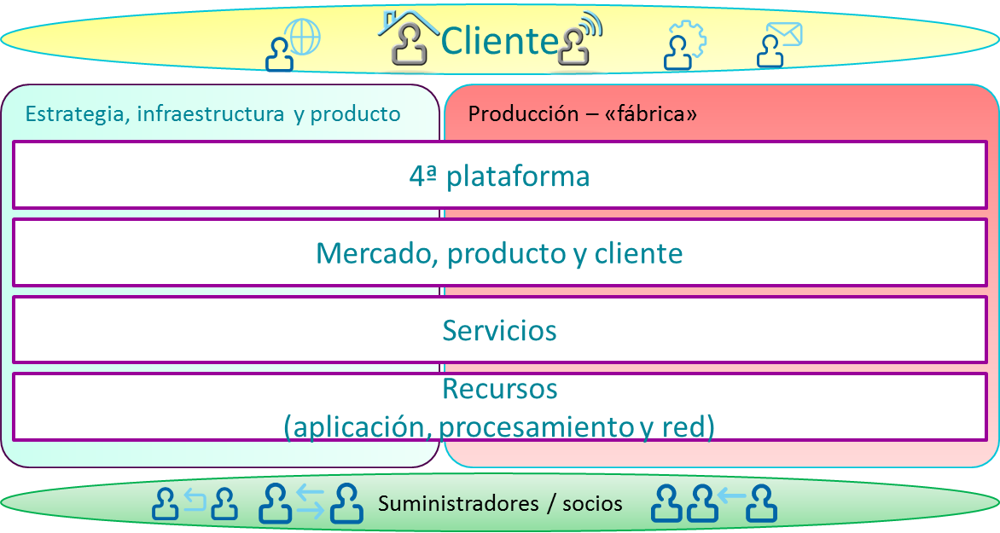
Ilustración Producto, servicio y recurso en procesos eTOM modificado
Para que esta concepción del sistema propuesto sea realizable debemos asumir e incluir en el desarrollo las pautas descritas a continuación,
-
Unificar SDN + NFV + nube porque de manera independiente ninguno de estas soluciones puede resolver la problemática de los servicios de telecomunicación
-
Soportar una multiplicidad de actores que han de intervenir sobre los servicios programables de la red, reconociendo las peculiaridades de cada uno de ellos.
-
Desarrolladores de servicios, internos e incluyendo a terceros
-
Suministradores de servicios, internos e incluyendo a terceros
-
Abonados
-
Contemplar la gestión automática del estado del servicio, sin asumir que el estado de todos los servicios es igual, propiciando que existan 2 tipos de estado
-
Autoritativo, que define el estado deseado del sistema
-
Operacional, que define el estado actual, fluctuante y algunas veces erróneo del sistema en este momento
-
Potenciar redes o circuitos virtuales, distinguiendo entre red y circuito atendiendo la complejidad de la conexión demandada por el abonado, para el segmento residencial hablamos de circuitos y para empresas de redes.
-
Principio de menor privilegio
-
Implementar funcionalidad
Capas de abstracción
Para su gestión creamos una abstracción de las varias capas de los servicios, lo que nos permite pensar en un concepto que podemos denominar plano de control del servicio. En el caso de la CTPd hemos utilizado OneFlow, dentro de OpenNebula, como el mecanismo que realiza la representación de la estructura de los servicios, este contiene un lenguaje para escribir programas de control, y un ejecutable que aplica estas políticas en el sistema operativo
-
Modelo de datos autoritativo basado en Django
-
Interfaces programables para las políticas tanto RESTful como OASIS-TOSCA
-
Sincronizador que utiliza Ansible para mantener el estado operacional de los recursos sincronizados con el estado autoritativo de CORD
ONOS define una abstracción del grafo de la red en un conjunto de conmutadores marca blanca, ONE define un conjunto de primitivas de recursos de la nube sobre unos servidores marca blanca, y sobre esta base dual, la CTpd define tres capas de abstracción que podemos resumir así.
- El grafo del servicio existente en la CTpd, representa la relación de dependencia entre un conjunto de servicios que a la vez conforman un producto. CTpd modela la composición del servicio como una relación de tenencia entre un servicio básico y un servicio de tenencia. La tenencia del servicio está anclada a un Tenedor Principal, como sería un abonado, que está unido a una o más cuentas de usuario.
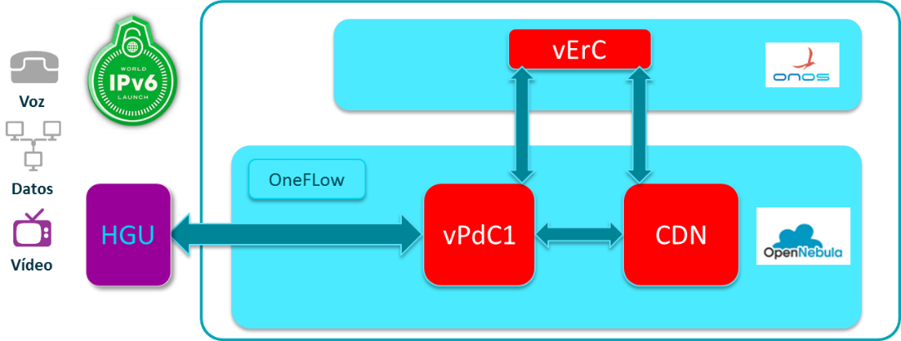
Ilustración Ejemplo de grafo de un servicio
-
El servicio representa un programa multitenencia, elásticamente escalable, incluyendo la manera de instanciarle, controlarle y escalar su funcionalidad. CORD modela un servicio como un controlador de servicio que exporta una interfaz multitenencia y un conjunto de instancias del servicio que es elásticamente escalable, y que colectivamente se instancian en una rebanada.
-
Una rebanada representa un conjunto o contenedor de recursos de todo el sistema dentro del que se ejecutan los servicios, incluyendo el cómo se especifica la inclusión de estos recursos en la infraestructura que les soporta. En la CTpd modelamos una rebanada como un grupo de máquinas virtuales, que se implementan en OpenNebula y un conjunto de circuitos virtuales que las implementa ONOS.
-
Un circuito virtual representa una interconexión de comunicación entre un conjunto de instancias, se soportan varios tipos de circuitos virtuales, incluyéndose los privados que conectan instancias con una rebanada, de acceso directo utilizado por un servicio de tenencia para acceder a un servicio básico direccionando directamente cada instancia del servicio básico, y de acceso indirecto utilizado por servicio de tenencia para acceder al servicio básico direccionando el servicio como un todo.
El mecanismo subyacente en la CTpd que soporta los Circuitos Virtuales se implementa con un par de aplicaciones de control que corren en ONOS. La primera de ellas, llamada VTN, instala reglas de flujo en los OvS que corren en cada servidor para implementar el direccionamiento directo o indirecto. La segunda es Forwarding e implementa flujos entre los servidores y otros dispositivos físicos de la central a través del tejido de conmutación.
Terminal óptico virtual - vOLT
Este concepto en ONOS es producto de desmantelar los actuales terminales ópticos monolíticos de las centrales, por una combinación de silicón Marco Polo y una aplicación de código abierto. La primera implementación se ha enfocado en el acceso GPON, pero es igualmente extrapolable a XGS-PON remplazando la bandeja de silicón, algo que AT&T ya ha especificado dentro del Open Compute Project.
Las bandejas de puertos ópticos GPON fabricados bajo la especificación de AT&T dentro del OCP ya están disponibles en mercado, el proveedor es Celestica quien cuenta con plantas de fabricación en Valencia. La bandeja incluye los microcircuitos esenciales de GPON MAC controlados por un programa de control remoto que a su vez es gestionado vía OpenFlow por una aplicación de alto nivel.
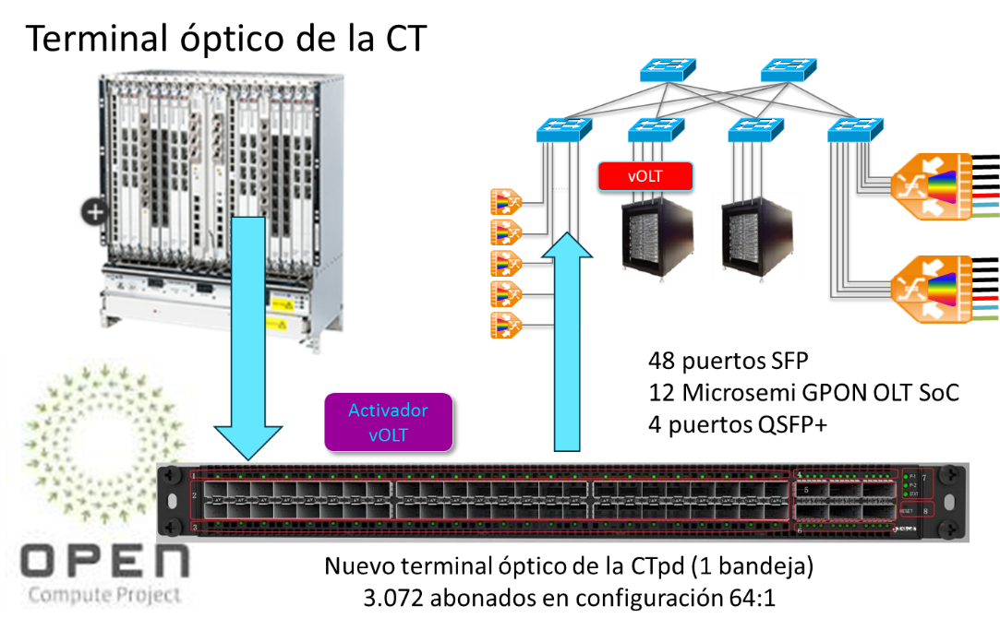
Ilustración Descomposición del terminal óptico de la C.T.
Hay dos piezas de código que funcionan conjuntamente para implementar la funcionalidad del vOLT. La primera es un agente vOLT que se instancia en una máquina virtual y facilita la conexión entre ONOS y el equipo, este agente expone hacia arriba una interfaz OpenFlow lo que permite que sea controlado por ONOS; de ahí mapea lo mensajes OF a las API nativas del equipo y mensajes OCMI que gestionan las ONT de la red óptica pasiva. La segunda pieza de código es un conjunto de funciones que gestionan algunas de las funciones tradicionales de una terminal óptica, como 802.1X, IGMP Snooping, puentes VLAN y OAM; estas funciones de control están implementadas como aplicaciones que se ejecutan sobre ONOS, facilitan instanciar un abonado, autenticación.
Arquitectura del circuito de acceso GPON
El tráfico de los abonados se identifica dentro de la central telefónica por dos etiquetas en los circuitos virtuales, el terminal óptico en destino y en la central son responsables del etiquetado y desetiquetado del tráfico de cada abonado en lo que este va y viene; ONOS le instruye a la OLT que circuito utilizar mediante mensajes OpenFlow.
La siguiente ilustración muestra donde ocurre el etiquetado según el tráfico transita desde la sede del abonado hasta internet. Dentro del hogar no hay etiquetas…
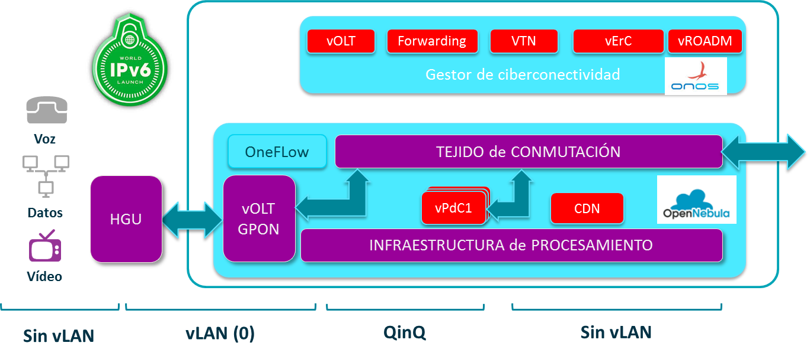
Ilustración Arquitectura del circuito de acceso PON
Componentes lógicos
Agente vOLT
Este agente está construido con Indigo, netconfd, las interfaces propietarias del silicón de PMC Sierra, ahora MicroSemi, y una pila OMCI.
Aplicaciones en ONOS
-
vOLT (onos-app-olt) está encargada de configurar las etiquetas del circuito en la OLT
-
AAA (onos-app-aaa) tramita la autenticación entre el dispositivo del hogar y el servidor Radius; cuando el usuario ha sido autorizado, la aplicación debe instanciar los servicios del usuario en OneFlow
Enrutador de Central virtualizado - ErC
Esta aplicación de control de la red se ejecuta en ONOS y es la encargada de agregar los circuitos de los abonados y canalizar el tráfico desde/hacia la red de transporte. Como es de esperar esta aplicación, que la podemos visualizar como un servicio, debe modificarse para acomodar las necesidades específicas de las redes de transporte de Telefónica y de la red de transporte de Telefónica de España para este case de uso. En CORD esta aplicación se conoce como vRouter.
Requisitos del ErC
-
Realizar enrutamiento mono difusión de y hacia la C.T.; participar en protocolos de enrutamiento dinámico
-
Señalización y entrega de multidifusión
-
Aplicar políticas de calidad del servicio (QoS)
-
Realizar funcionalidad de traducción de direcciones de red (NAT)
-
No realiza todas las funciones de los actuales BNG monolíticos
Diseño
El diseño del servicio ErC está compuesto de dos partes que se pueden considerar relativamente independientes, la parte de plano de control y la del plano de datos.
Plano de Control
La funcionalidad primordial del ErC es la hablar protocolos de enrutamiento con enrutadores externos; para evitar tener que implementar protocolos de enrutamiento dentro de una aplicación de ONOS, hemos elegido la utilización del sistema de enrutamiento Quagga, que es un sistema de código abierto y soporta una gran variedad de protocolos de enrutamiento. Para el caso de uso de una C.T. no anticipamos problemas de desempeño que se podría tener con enrutadores globales.
Quagga se configurará para comunicarse con los enrutadores de transporte de Telefónica y de cara a la CTpd utilizaremos la interfaz FIB Push Interface (FPI) para comunicar las rutas desde Quagga a ONOS. Desde aquí la aplicación ErC actúa como el gestor del plano de entrega, Forwarding Plane Manager (FPM), y es capaz de recibir y descodificar rutas de Quagga, y entonces utiliza estas rutas para programar el plano de datos de manera correspondiente.
El diseño de este plano de control es similar a la aproximación utilizada en la aplicación ONOS SDN-IP, es decir utilizando la filosofía de construir sobre bloques ya desarrollados. La diferencia reside en que necesitamos soportar más que BGP, porque necesitamos también soportar un protocolo de pasarela interior, Interior Gateway Protocol (IGP) y como mencionamos arriba utilizamos la interfaz FPM para comunicar Quagga y ONOS mientras que en la SDN-IP se utiliza iBGP como conexión.
Circuito de control
Para que Quagga se comunique con los enrutadores aguas arriba, cierto tráfico de control debe fluir entre el servidor Quagga y el enrutador externo. Previamente a intercambiar rutas, la primera tarea del ErC es programar el plano de datos para que este tráfico fluya. El servidor Quagga está conectado a un puerto en el plano de datos del ErC, y los paquetes de enrutamiento entrantes y salientes se direccionan a ese puerto; esto permite circunvenir la función usual de enrutamiento del ErC porque este tráfico es de control destinado únicamente al enrutador mismo.
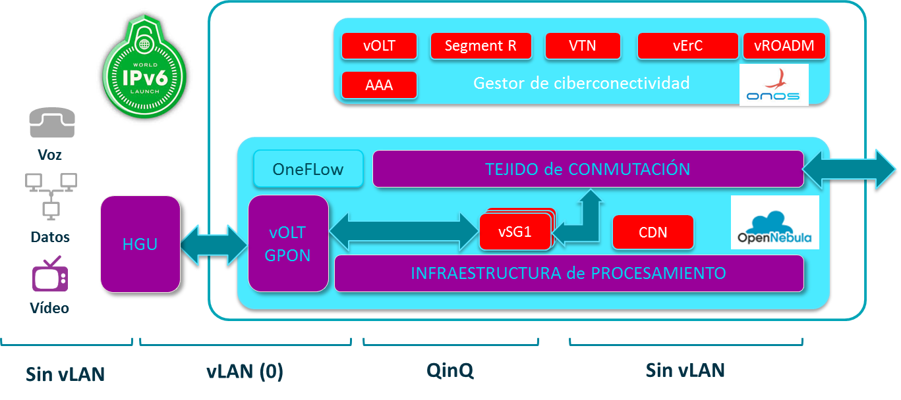
Ilustración Circuito de control del enrutador
Multidifusión
El ErC necesita soportar señalización de multidifusión PIM-SSM aguas arriba, pero Quagga no gestionará PIM-SSM por lo que una aplicación dedicada de ONOS se hará cargo de gestionar los mensajes PIM.
Plano de datos
Por ahora la solución de CORD utiliza un conmutador dedicado para el plano de datos del vRouter y no utiliza el tejido CLOS, eso se hizo por razones de tiempo y aparente complejidad. En el ErC vamos a intentar resolver esto porque no tiene mucho sentido redundar conmutadores fuera del tejido, además el gestor del tejido dentro de ONOS debemos mejorarlo para que soporte NAT y QoS.
vPdC Pasarela de Cliente equivalente al vSG de CORD
La idea de mover a la C.T. parte de la funcionalidad del dispositivo de interconexión del hogar del cliente, no solo por temas de ahorro de coste mantenimiento, sino para poder ofrecer funcionalidad adicional que hoy no es posible ofertar debido en parte al alto coste de despliegue en casa del cliente.
En esta primera fase la funcionalidad que se ha ofrece desde la CTpd se basa en Linux y se ejecutaría en la máquina virtual, o contenedor, de cada cliente. Por ahora son funciones básicas de conectividad con internet y algunos servicios de valor añadido, como suspender/reanudar, control parental, etc.
La pasarela cumplirá con los principios de arquitectura del RFC 7368 “Redes IPv6 del hogar” que tiene permite tener múltiples subredes, por ejemplo, para facilitar tener una red privada y otra de invitados, capas de enlace heterogéneas, componentes inteligentes de servicios públicos, y tener suficiente espacio de direccionamiento disponible para permitir que cada dispositivo tenga una única dirección global. No se debe esperar que los usuarios en el hogar configuren sus redes, por tanto, el RFC 7368 asume que en la medida de lo posible la red del hogar se auto organiza y auto configura, es decir, que funcionará sin una gestión dedicada por parte del cliente residencial.
Es importante distinguir entre direccionamiento y ser contactado, mientras IPv6 ofrece direccionamiento global mediante la utilización de direcciones únicas en el hogar, si un dispositivo puede ser contactado globalmente o no dependerá de algún cortafuegos o configuración de filtrado, y no de la presencia o utilización de un NAT como en IPv4.
La vPdC también debe tener en cuenta lo descrito en el RFC 7084 “Requisitos básicos de los enrutadores IPv6 de cliente”, actuar como el borde entre la red del hogar y las redes externas, ser capaz de proporcionar prefijos para la creación de subredes dentro del hogar, gestionar eficientemente direcciones locales y direcciones globales de cada dispositivo.
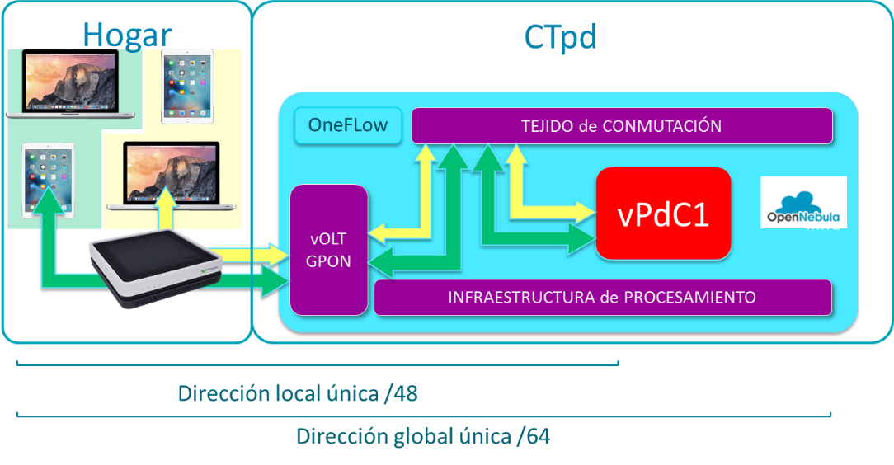
Ilustración Arquitectura de la red IPv6 del hogar
Tejido CLOS, virtualización y composición de servicios
La arquitectura de la CTpd y por ende del tejido CLOS tiene las siguientes características:
-
Es una solución de ciberconectividad basada en un tejido CLOS, con conmutadores marca blanca y programas de conmutación de código abierto, aunque se podrían utilizar otros protocoles, la arquitectura se basa totalmente en OpenFlow.
-
El tejido tiene las siguientes características:
-
La conmutación de nivel 2 en cada bastidor la hacen los conmutadores TOR
-
Utilizamos ECMP para el flujo de nivel 3 entre los bastidores
-
VLAN cross-connect feature to switch QinQ packets entre las bandejas de acceso óptico y las instancias del vSG
-
Multidifusión IPv6 para los flujos de IPTV desde las cabeceras de vídeo hasta los abonados
-
Soporte del ErC para conectarse a los enrutadores de transporte si es necesario para establecer rutas públicas
-
Facilidad de utilizar el tejido CLOS en despliegues mono o multibastidor
-
El tejido CLOS forma la red subyacente en una arquitectura de redes sub y supra yacente, la red supra yacente, a veces referida como el tejido exterior, también se basa en SDN con estas características:
-
Utilización de conmutadores virtuales, OvS con DPDK, con una conexión a medida para el encadenamiento de servicios
-
Equilibradores de carga distribuidos para servicios en cada OvS
-
Túneles VxLAN en OvS para redes virtuales supra yacentes
La ventaja más notoria de utilizar un control de SDN común para la infraestructura suprayacente y para el tejido subyacente es que pueden ser orquestados conjuntamente para dar las prestaciones y servicios que demanda una Central Telefónica, con la agilidad y eficiencias de las operaciones de un CPD.
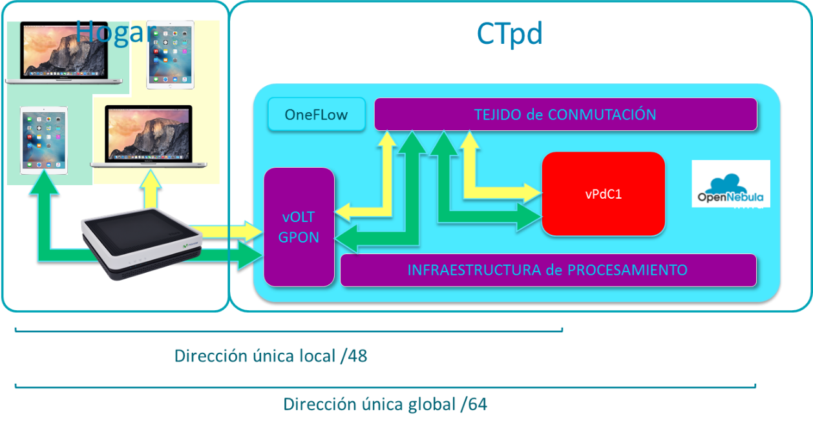
Ilustración Adaptar el controlador del tejido a IPv6
Aplicaciones de control de ONOS
El tejido en el centro de este diseño es el encargado de interconectar todos los componentes de la CTpd, incluyendo las bandejas de acceso GPON, nodos de computación y las tarjetas de interconexión a la red de transporte. La aplicación de control del tejido se ejecuta sobre ONOS e interactúa con otras aplicaciones necesarias para proporcionar los varios servicios de la CTpd.
En la implementación para CORD y para facilitar el desarrollo de las varias aplicaciones, se han ejecutado dos instancias de ONOS separando el control del tejido del resto de aplicaciones de servicio, lo recomendado por ON.Lab es utilizar una instancia de ONOS para controlar CORD, y es lo que hemos planificado para la CTpd.
Infraestructura y programas del tejido
Los conmutadores en el tejido se apalancan y utilizan infraestructura y programas de varios proyectos con licencias abiertas, tal como se ilustra a continuación.
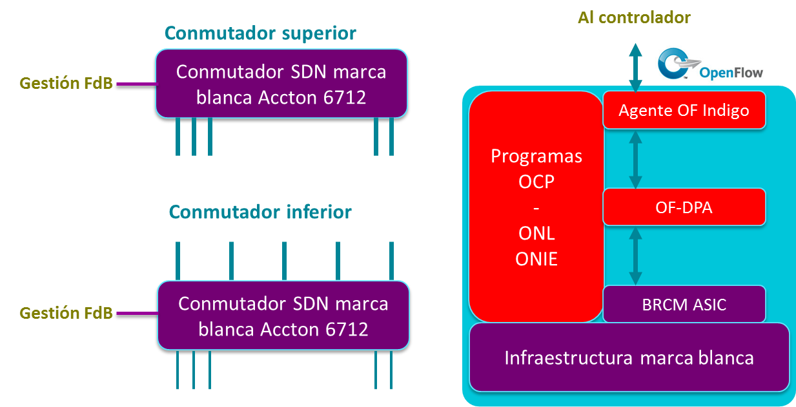
Ilustración Infraestructura y programas del tejido
Todos los conmutadores son idénticos, utilizan los mismos programas de control, gestión y conmutación, la única diferencia es su posición en el tejido, esta solución fue propuesta y desarrollada en el proyecto Atrium de la ONF, e incluye los componentes utilizados en esta solución, ONL y ONIE como sistema operativo de los conmutadores, también utiliza el OF-DPA de Broadcom para abrir varias de sus interfaces propietarias en términos entendibles por OpenFlow y que se encuentran en su SDK. Esto permite que, en este caso, ONOS pueda programar todas las tablas de encaminamiento en el ASIC del conmutador, para así poder utilizar toda la funcionalidad existente en los ASIC de nueva generación.
Soporte del tejido para la comunicación entre la OLT y el vSG
Los abonados residenciales se conectan a la CTpd a través de la red de acceso GPON, y al descomponer la OLT monolítica, todas las funciones que se transforman en programas se trasladan a la nube, y una de ellas es el vSG.
Tal como describimos con anterioridad, el tráfico entre la cSG se etiqueta doblemente, con la etiqueta externa identificando la red PON a la que pertenece el abonado, y la etiqueta interior identifica al abonado individualmente.
Esta infraestructura del acceso residencial es manejada por la aplicación de control vOLT, coordinada con OneFlow. Una vez que el cliente ha sido identificado y autenticado, las doble etiquetas del circuito asignadas para el cliente, y se ha instanciado su vSG en un nodo de cómputo, la aplicación que controla el tejido es informada de cuál es la OLT a donde está conectado el cliente y el nodo de computación donde se ha instanciado el vSG de cliente; entonces la aplicación programa las reglas de encaminamiento dentro del tejido que permiten que la comunicación fluya dentro del mismo.
Composición del servicio
Los servicios en la CTpd se ensamblan utilizando las mejores prácticas de las operaciones en la nube; los servicios los instancia el operador o gestor de red utilizando OneFlow, a su vez OneFlow le presenta a ONOS un grafo del servicio para el tráfico del abonado. Este grafo es luego descompuesto en reglas de tráfico que se programan en la infraestructura de red de la CTpd por la aplicación VTN de ONOS. En esta sección se hace un breve resumen de las alternativas de implementación hechas para realizar la composición del servicio en la infraestructura de red.
En la CTpd la composición del servicio se implementa utilizando redes suprayacentes y virtualización de la red, resumiendo sus características de esta manera,
-
Los servicios tienen su propio circuito virtual, CV – las máquinas virtuales o contenedores que instancian el servicio son parte del mismo CV, y estas instancias se pueden crear en cualquier lugar de la nube del CTpd, es decir en cualquier nodo de cómputo o en distintos bastidores
-
Es capaz de incrementar o menguar dinámicamente la cantidad de máquinas virtuales y contenedores, y en consecuencia el tamaño del mismo CV, esta característica es primordial para tener escalabilidad en la nube
-
Cada nodo de cómputo aloja máquinas virtuales o contenedores, pertenecientes a CVs de múltiples servicios, conectadas a OvS que actúan como conmutadores muy programables del hipervisor y controlados con OpenFlow
-
Cada CV o servicio tiene su propio balanceador de carga distribuido a lo largo de cada OvS en la red. La función del balanceador de carga es seleccionar la instancia de una máquina virtual que está instanciando un servicio, entre todas las máquinas virtuales dentro del CV del servicio
Sistema de supervisión y gestión – en desarrollo
Este servicio debe ser capaz de supervisar, y si es necesario, analizar la marcha de distintos componentes de la CTpd en la prestación de los servicios encomendados. Los principales objetivos y requisitos de este sistema son
-
Ser una plataforma genérica para el análisis
-
Debe ser escalable y soportar multitenencia
-
Debe ser posible introducir instrumentos o sondas en los servicios más allá de los dispositivos de cómputo y conmutación
-
Debe ser posible ajustar el nivel de sondeo en los dispositivos subyacentes
-
Debe ser posible agrupar la información de las sondas
-
Debe ser posible redireccionar los flujos de tráfico a través de una “sonda virtual” para obtener una inspección más profunda que no es posible obtener de los dispositivos subyacentes
Como se muestra en la siguiente ilustración, el sistema de supervisión consigue la información de las sondas desde distintos elementos de red en la CTpd, incluyendo nodos de cómputo, conmutadores, dispositivos de acceso a central y servicios programables ejecutándose en los nodos de cómputo; poniéndola a disposición de otras aplicaciones de análisis ejecutándose en la CTpd. El sistema se integrará con los servicios residenciales como el vSG, el ErC, la vOLT, aunque la arquitectura permite extenderlo a futuras plataformas de la CTpd como el acceso móvil o empresarial.
Ilustración Entorno de gestión de la CTpd (pendiente)
El sistema para la administración y gestión de la virtualización y ciberconectividad, así como su integración con los otros sistemas de gestión de la empresa, es clave para el éxito de estas soluciones, y a la vez está probando ser el punto de inflexión en las distintas integraciones que están intentando vender distintos fabricantes.
Para mantener cierta independencia de los fabricantes tradicionales, vamos a utilizar componentes desarrollados en código abierto por comunidades de usuarios y no tanto por fabricantes tradicionales, esto nos permitirá conjuntar un sistema de administración más acorde con nuestras necesidades globales, pero que al mismo tiempo nos permita reutilizar infraestructura que ya está en producción. Para ello hemos seleccionado OpenNebula con ONOS, soluciones ambas muy ligeras de código pero con las prestaciones que necesita una operadora de telecomunicaciones, a diferencia de soluciones más comerciales como OpenStack, OpenDaylight u otras.
Los componentes del sistema de gestión y administración a utilizar son:
-
OpenNebula – gestor y orquestador de nubes que funciona sobre infraestructura heterogénea y de forma nativa resuelve la creación, gestión y administración de CPDs virtuales geográficamente dispersos
-
ONOS – sistema operativo de la red desarrollado por ON.Lab, versión Cardinal o Drake
Integración
El sistema debe ser capaz de administrar una topología nube como la ilustrada
Teniendo en cuenta que los emplazamientos pueden estar dispersos en una amplia zona geográfica de un país o pueden prestar servicios de una operadora a otra en el mismo o distintos continentes.
Definición y dimensionamiento de componentes
Los principales componentes y su dimensionamiento a utilizar…
-
Infraestructura
-
Servidores: OCP
-
Almacenamiento: OCP + CEPH
-
Conmutadores: OCP Accton
-
CPE: cualquiera
-
OLT: OCP PMC-Sierra
-
-
SO
- Computación: Linux
-
Hipervisor: KVM
-
Gestor de la nube y servicios: OpenNebula
-
S.O. de la red: ONOS
-
Aplicaciones: vCPE NEC, OpenWRT, etc.